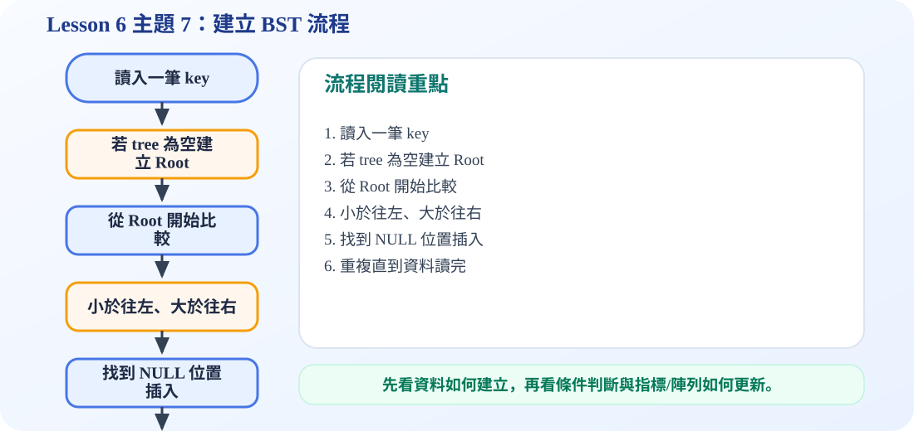

一、建立 BST 的核心規則
核心概念
建立 Binary Search Tree 時，每一個新節點都要從 root 開始比較。新值比目前節點小，就往 left child；新值比目前節點大，就往 right child；如果走到 NULL，就把新節點放在那個位置。
重點：BST 的形狀會受到「插入順序」影響。同一組資料，用不同順序插入，可能長出不同形狀的 BST。
二、動畫流程：一筆一筆建立 BST
三、互動示範：依序插入 7, 3, 14, 2, 4, 10, 16, 1, 8
建立完後，若對 BST 做 inorder traversal，會得到 1 2 3 4 7 8 10 14 16，也就是由小到大的排序結果。
四、容易考的觀念
BST 的平均搜尋、插入效率和樹高有關。如果樹接近平衡，高度約是 log n，效率較好；如果資料剛好照排序順序插入，樹可能變成一條斜線，高度接近 n，效率就會變差。
好的情況
樹比較平衡，每次比較可以排除一大半資料，搜尋較快。
壞的情況
樹變成 skewed tree，搜尋可能像 linked list 一樣，要一路往下找。
五、C 程式碼：建立 BST
build_bst.c
包含節點建立、insert、preorder、inorder 與 main 測試。可觀察建立後的樹形與排序結果。
/*
中文註解版程式：build_bst.c
說明：主題 7：建立 Binary Search Tree。依序插入資料並用 preorder/inorder 觀察樹形與排序結果。
閱讀方式：先看資料結構定義，再看操作函式，最後看 main() 如何測試。
*/
// 匯入標準輸入輸出函式庫，提供 printf / scanf 等功能。
#include <stdio.h>
// 匯入標準函式庫，提供 malloc / free / exit 等記憶體與程式控制功能。
#include <stdlib.h>
// 定義節點結構：資料欄位存節點內容，指標欄位負責連到其他節點。
typedef struct Node {
int key;
struct Node *left;
struct Node *right;
} Node;
// 建立新節點：配置記憶體、填入資料，並把左右指標初始化為 NULL。
Node* createNode(int key) {
Node* n = (Node*)malloc(sizeof(Node));
if (n == NULL) {
printf("Memory allocation failed.\n");
exit(1);
}
n->key = key;
n->left = NULL;
n->right = NULL;
return n;
}
// BST 插入：比目前節點小往左，大往右；空位置就是新節點位置。
Node* insert(Node* root, int key) {
if (root == NULL) {
return createNode(key);
}
if (key < root->key) {
root->left = insert(root->left, key); // 較小的 key 放左子樹
} else if (key > root->key) {
root->right = insert(root->right, key); // 較大的 key 放右子樹
} else {
printf("%d already exists, skip duplicate.\n", key);
}
return root;
}
// Inorder 走訪：Left → Visit → Right；套用在 BST 會得到由小到大的排序。
void inorder(Node* root) {
if (root == NULL) return; // 遞迴終止條件：空節點不需要處理
inorder(root->left); // 先走左子樹
printf("%d ", root->key); // 再拜訪目前節點
inorder(root->right); // 最後走右子樹
}
// Preorder 走訪：Visit → Left → Right，常用來觀察樹建立的形狀。
void preorder(Node* root) {
if (root == NULL) return; // 遞迴終止條件：空節點不需要處理
printf("%d ", root->key); // 再拜訪目前節點
preorder(root->left); // 再走左子樹
preorder(root->right); // 最後走右子樹
}
// 釋放整棵樹：先釋放左右子樹，再釋放目前節點，避免記憶體洩漏。
void freeTree(Node* root) {
if (root == NULL) return; // 遞迴終止條件：空節點不需要處理
freeTree(root->left);
freeTree(root->right);
free(root);
}
// 主程式：建立測試資料，呼叫上方函式，觀察輸出結果。
int main(void) {
int data[] = {7, 3, 14, 2, 4, 10, 16, 1, 8};
int n = sizeof(data) / sizeof(data[0]);
Node* root = NULL;
for (int i = 0; i < n; i++) {
root = insert(root, data[i]);
}
printf("Preorder building shape: ");
preorder(root);
printf("\n");
printf("Inorder sorted result: ");
inorder(root);
printf("\n");
freeTree(root);
return 0;
}
可編輯 C 程式範例：含中文註解與線上編輯器
這一段提供可直接修改的 C 程式碼。可以按「複製程式」貼到線上編輯器執行，也可以下載 .c 檔案。
程式題目教學內容：建立 Binary Search Tree
一、程式題目講解
本題示範依序插入資料如何形成一棵 BST。學生需要理解資料插入順序會影響樹的形狀，也會影響搜尋效率。
二、完整程式碼
完整可執行程式碼已保留在上方「可編輯 C 程式範例：含中文註解與線上編輯器」區塊中，檔名為 build_bst.c。該程式碼已加入中文註解，學生可以直接複製到 OnlineGDB、Programiz 或 OneCompiler 執行。
三、程式執行結果
Preorder building shape: 7 3 2 1 4 14 10 8 16
Inorder sorted result: 1 2 3 4 7 8 10 14 16 Preorder 顯示建立後的樹形大致順序；Inorder 顯示排序結果 1 2 3 4 7 8 10 14 16，證明 BST 建立正確。
四、程式流程圖與流程圖說明
本頁下方已保留原本的程式流程圖。閱讀流程圖時，可以依序掌握「初始化資料或節點 → 執行主要函式或判斷 → 輸出結果」的過程。先設定一組資料，再從第一筆開始逐一呼叫 insert。每次插入都從 root 開始比較，小的往左，大的往右，直到找到 NULL 位置放入新節點。
五、重要函數與語法說明
insert()：建立 BST 的核心函式；createNode()：配置新節點；preorder()：觀察樹的建立形狀；inorder()：確認排序結果。
六、整體說明
本題重點是 BST 不是直接排序陣列，而是透過插入規則把資料組成一棵可搜尋的樹。
程式流程圖：建立 BST 流程
下圖是本主題對應的程式執行流程，適合搭配本頁 C 程式碼一起看。

流程講解
- 建立 BST 時，每讀入一個 key 就從 root 開始比較。
- 小於目前節點往左，大於目前節點往右。
- 當走到 NULL 位置時，代表找到新節點應該插入的位置。
- 重複插入所有資料後，整棵 BST 就建立完成。
這張流程圖把本頁程式的執行順序整理成一條清楚路徑。閱讀時先看輸入與資料如何建立，再看條件判斷、指標或陣列索引如何改變，最後用輸出結果確認程式邏輯是否正確。